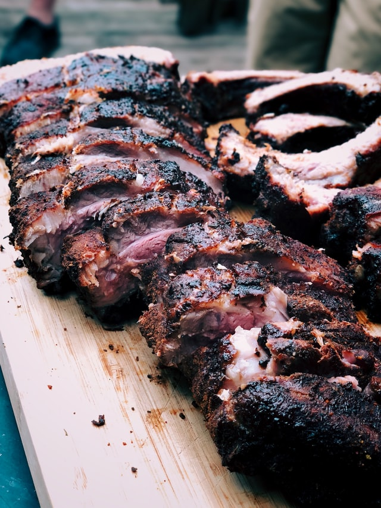

Carolina red sauce ribs
Posted by: Lukas Chapman
Description: This is a standard southern barbecue, in the form of spare ribs smoked with hickory, dry-rubbed, and basted in Carolina red sauce

Overall Rating:
Diffculty rank:
Servings:
Prep time:
Cook time:
Total time:
Ingredients:
- 3 Tbsp chili powder
- 1 Tbsp garlic powder
- 1 Tbsp onion powder
- 1 Tbsp paprika (sub with smoked paprika for oven method)
- 2 Tbsp ground mustard
- 1 Tbsp dried oregano
- 1 Tbsp kosher salt
- 1 Tbsp each of black and white pepper
- 1 Tbsp cumin (optional, omit for oven method)
- 1 tsp cayenne pepper (optional)
- 3 full racks of pork spare ribs, with membranes removed
- 2 cups apple cider vinegar
- 2 cups tomato puree (sub with 1 1/2 cups ketchup for oven method)
- 1/4 cup dark brown sugar (increase to 3/4 cup for oven method)
- 1/2 tsp paprika
- 1 tsp garlic powder
- 1 tsp onion powder
- 1 tsp salt
- 2 tsp ground mustard (sub with 1/4 cup yellow mustard for oven method)
- 2 tsp Worcestershire sauce
- 2 Tbsp liquid hickory smoke (omit if using a smoker)
- 1 cup apple juice, preferably used via spray bottle
Instructions:
- Cook brisket fat-side down in a cast iron skillet for 4-5 minutes
- Peel and chop the carrots, chop celery into 1 inch chunks, peel and roughly chop 4 medium onions and crush 4 cloves of garlic
- Remove all but 2 tbsp of fat from pan (if necessary)
- Carmelize onions in the pan slowly for 10 minutes, adding brown sugar for color
- Add carrots and celery and continue simmering for 2 minutes before adding garlic and tomato paste before sauteing for 30 seconds
- Mix in thickener, usually flour or potato starch and let it before adding dry red wine to deglaze at medium high heat, being sure to scrape the bottom
- Add beef broth (use another cup and a half of dry red wine if not enough liquid is in the pan), ketchup and crushed tomatoes
- Add the rest of the ingredients to the liquid, adding the brisket and covering tightly. Broil in oven at 300 degrees fahrenheit for 3-4 hours
- Let cool for an hour before serving (for best results, remove fat before broiling, this will make the fluid less greasy)